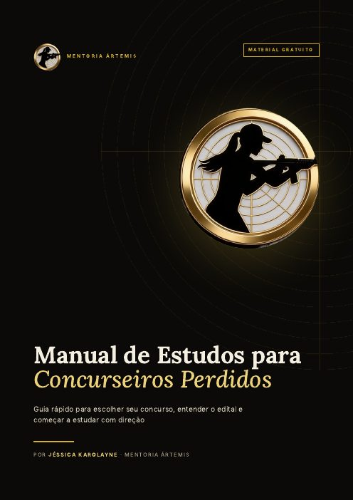

Mentoria para concursos públicos
Errar o primeiro tiro não tira você do alvo.
A Jéssica foi reprovada na primeira prova que fez. Depois vieram 16 aprovações. Na Mentoria Ártemis, ela ensina o que fez a diferença: escolher o concurso certo e criar o hábito de estudar.
A trajetória
Cada prova foi um disparo. Nem todos acertaram.
Jéssica Karolayne Araújo Ferreira Dias tem 28 anos, é mãe, formada em Direito e soldado da Polícia Militar de Minas Gerais. Agora, foi aprovada para o cargo de Policial Legislativo Federal da Câmara dos Deputados. Até aqui, foram oito anos de reprovações, provas canceladas, recursos negados e uma mudança de estado. A seguir, ela conta essa trajetória com as próprias palavras.
Quero conhecer a históriaFechar a história
-
2015 · Brasília
Tudo começou no Direito
Entrei na faculdade de Direito em 2015, em Brasília. Naquela época, eu não fazia ideia de como funcionavam os concursos públicos nem sabia como me preparar para uma prova desse tipo.
-
Março de 2018 · ABIN
O primeiro “não”
Aos 19 anos, me inscrevi no concurso da ABIN e estudei sozinha, com uma apostila. Quando o resultado saiu, procurei meu nome e não encontrei. Fiquei muito triste, mas, em vez de desistir, decidi tentar de novo.
-
Maio de 2018 · PMDF
Tão perto da posse
Durante a prova da Polícia Militar do DF, a luz acabou, e eu continuei concentrada. Passei em todas as etapas e fiquei dentro da primeira turma. Só que ainda faltavam seis meses para eu me formar e, sem o diploma, não pude tomar posse.
-
Goiás · temporário
Meu primeiro passo na segurança pública
Fui aprovada como vigilante penitenciária temporária em Goiás. A pandemia adiou o início, mas, quando comecei, fiquei três anos e meio na unidade. Nas horas vagas, ajudava meu pai na lanchonete e seguia estudando, porque sabia que precisava de um cargo efetivo.
-
Gravidez · 2021
Quando a vida mudou os planos
Grávida, eu viajei sozinha até Curitiba para fazer a prova da PCPR, mas a prova foi cancelada três horas antes. Depois, eu não passei no DEPEN. No mesmo ano, a prova da PCDF foi remarcada justamente para o dia em que a minha filha nasceu.
-
Licença-maternidade
Estudando com ela ao meu lado
Durante a licença, eu colocava minha filha ao lado da cama e estudava enquanto ela dormia. Fui aprovada no concurso efetivo e no temporário da Polícia Penal de Minas Gerais e fiz o TAF no dia do primeiro aniversário dela.
-
Polícia Penal de Minas Gerais
Um teste que precisei refazer
Eu já tinha passado no teste físico da PPMG quando soube que ele foi anulado e deveria ser refeito, com apenas um mês de prazo. Sem treinar havia quase quatro meses, eu reprovei. E, no mesmo dia, veio a notícia de que eu tinha sido aprovada no temporário.
“Eu reprovava, processava aquela reprovação, ficava em paz comigo mesma e voltava para o jogo.”
-
Contagem · 2023
Recomeçar em Minas Gerais
Douglas pediu demissão e nos mudamos para Minas Gerais. Nossa filha ficou com a minha mãe até eu receber o primeiro salário. Foram meses de aperto, com cartões comprometidos e um empréstimo que levamos quase um ano para pagar.
-
2023 · três editais
Três aprovações no mesmo ano
Mesmo trabalhando, estudei para três concursos ao mesmo tempo e fui aprovada nos três: soldado e oficial da PMMG e soldado da PMDF. No concurso de oficial, fiquei como excedente e não fui chamada.
-
CFSd · PMMG · dez. 2023 a set. 2024
Os nove meses mais difíceis da minha vida
Passei por privação de sono, cansaço, desmaios e duas dengues. Enquanto isso, o Douglas cuidou da casa e da nossa filha. Terminei o curso em 3º lugar e, finalmente, conquistei meu primeiro cargo efetivo.
-
TRF6 · STM · IASES · PPMG
Eu sabia que podia ir além
Mesmo feliz na corporação, voltei a estudar. Fui aprovada no TRF6, em duas provas do STM, em duas do IASES e, mais uma vez, na Polícia Penal de Minas Gerais. Recusei o IASES, porque teria que mudar de estado de novo para ganhar pouco a mais.
-
Câmara dos Deputados
O concurso dos meus sonhos
Foram 97 dias de muita dedicação. Eu abri mão de festas, eventos e lazer e estudava em todos os horários que podia. Lembro de uma vez em que saí com a minha família para jantar e fiquei respondendo questões enquanto a comida não chegava. Mas todo o sacrifício valeu a pena: fui aprovada em todas as etapas do concurso para Policial Legislativo Federal da Câmara dos Deputados, dentro das vagas. Agora, aguardo o curso de formação, de volta a Brasília, onde tudo começou.
O cartão de tiro
16 aprovações
Do temporário ao concurso dos sonhos, passando por polícias, por tribunais e pelo sistema socioeducativo.
Da mais recente para a primeira.
A Mentoria Ártemis
Antes da matéria, a mira.
Aqui você não vai encontrar aulas de Português ou de Direito Penal. Este curso em vídeo vai te mostrar o que quase ninguém ensina: como escolher o concurso certo para você, organizar os estudos, se preparar com estratégia e se tornar o próximo aprovado.
- 1
Como escolher meu concurso?
Áreas de atuação, cargos, atribuições, escolaridade, requisitos, remuneração, locais de trabalho, etapas e concurso escada. Aprenda a comparar oportunidades e a identificar a carreira que combina com você.
- 2
Como estudar?
Planejamentos e cronogramas, escolha de materiais, questões como ferramenta de aprendizagem, revisões e o uso da inteligência artificial na rotina.
- 3
Provas discursivas
Como organizar ideias, estruturar respostas, desenvolver argumentos e treinar para atender ao que a banca espera.
- 4
Dicas e segredos estratégicos
Como evitar erros comuns, aproveitar melhor o tempo de estudo e ter uma postura mais estratégica até a aprovação.

Material gratuito
Manual de Estudos para Concurseiros Perdidos
Um guia rápido para escolher seu concurso, entender o edital e começar a estudar com direção. São 12 páginas escritas pela Jéssica para quem ainda não sabe por onde começar.
- Como escolher o concurso certo
- Concurso escada
- Escolaridade e requisitos
- Como acompanhar os concursos
- Como ler o edital sem se perder
- As etapas de um concurso
- Checklist para começar
Material gratuito
Baixe grátis o edital verticalizado do seu concurso.
Todo o conteúdo da prova organizado em uma lista, com espaço para marcar o que você já estudou, revisou e treinou com questões. É o modelo que a Jéssica usa nos planos de estudo da mentoria.
Turma de lançamento
Mire no seu primeiro acerto.
As vagas da turma de lançamento estão abertas. Escolha a forma de pagamento que for melhor para você e garanta o seu acesso pela Kiwify.
Curso completo em vídeo
De R$ 249,90 por
R$ 199,99à vista no cartão de crédito ou boleto
Oferta de lançamento (Black) · válida até 30/11
R$ 189,99 no Pix 5% de desconto
ou em até 12x de R$ 20,67 no cartão, com juros, pela Kiwify
- Módulo 1 — Como escolher meu concurso?Compare cargos, requisitos, salários e etapas e descubra a carreira que combina com você.
- Módulo 2 — Como estudar?Planejamento, cronograma, materiais, questões, revisões e uso de IA na sua rotina.
- Módulo 3 — Se preparando para provas discursivasOrganize ideias e estruture respostas para atender ao que a banca espera.
- Módulo 4 — Dicas e segredos estratégicos para se tornar o próximo aprovadoEvite erros comuns e aproveite melhor o seu tempo até a aprovação.
- Acesso pela plataforma Kiwify
Pagamento seguro pela Kiwify.
Novidades em breve
A sua mentoria com acompanhamento individual está chegando.
Em breve, os alunos da mentoria Ártemis terão acompanhamento individual para estudar para o concurso de sua escolha, com uma plataforma que possibilitará resolução de questões, cronograma personalizado com a sua rotina e outras ferramentas.
Perguntas frequentes
Dúvidas comuns
A mentoria ensina as matérias do concurso?
Não. Ela ensina como estudar: escolher o concurso, montar a rotina, organizar o conteúdo e manter a constância. As matérias, você estuda com o material de sua preferência.
Serve para quem está começando do zero?
Sim. A Jéssica começou do zero, ainda na faculdade, sem saber sequer o que era uma banca examinadora, e foi reprovada na primeira prova. A mentoria foi pensada para esse momento.
Trabalho e tenho filhos. Consigo acompanhar?
A Jéssica estudou enquanto trabalhava, ajudava na lanchonete do pai e cuidava de uma filha pequena. A rotina que ela ensina parte da vida real.
O manual é gratuito mesmo?
Sim. O Manual de Estudos para Concurseiros Perdidos é um PDF gratuito. É só clicar em “Baixar o manual grátis” e salvá-lo no celular ou no computador.
Como faço o pagamento?
Pela Kiwify, uma plataforma segura de cursos on-line. Você escolhe entre Pix (R$ 189,99, com 5% de desconto) e cartão de crédito ou boleto (R$ 199,99, com opção de parcelar em até 12x com juros no cartão). Na seção do curso, é só marcar a forma que preferir e clicar em “Quero entrar na mentoria”. Antes do pagamento, você assiste a um recado da Jéssica.